Settimana 42
Settimana di recupero dopo alcune settimane di carico!
Prima uscita
10km Z1. Uscita abbastanza buona, saltare per evitare le pozzanghere grandi come laghi non ha aiutato! 😜
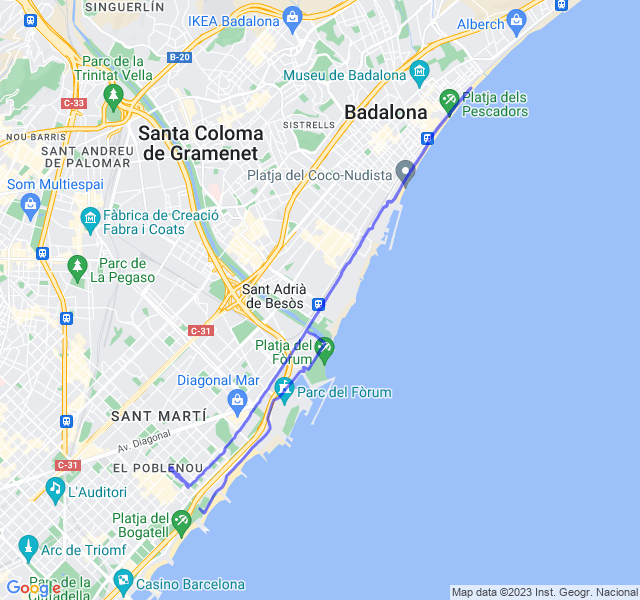
Seconda uscita
2x3min + 4x2min Z3 rec 1min Z2.
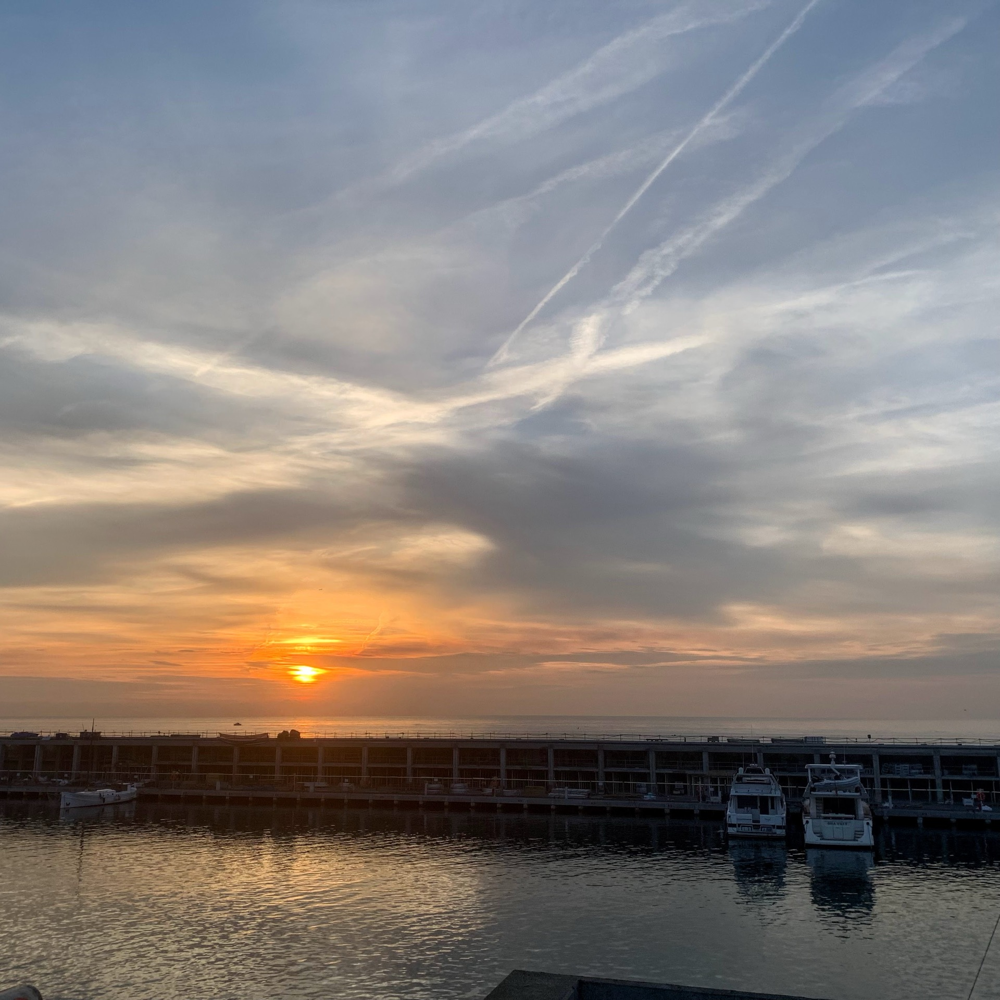
Un giallo abbastanza easy per questa settimana di scarico. Tutto bene, forse fc un po' bassa nei minuti di Z3.
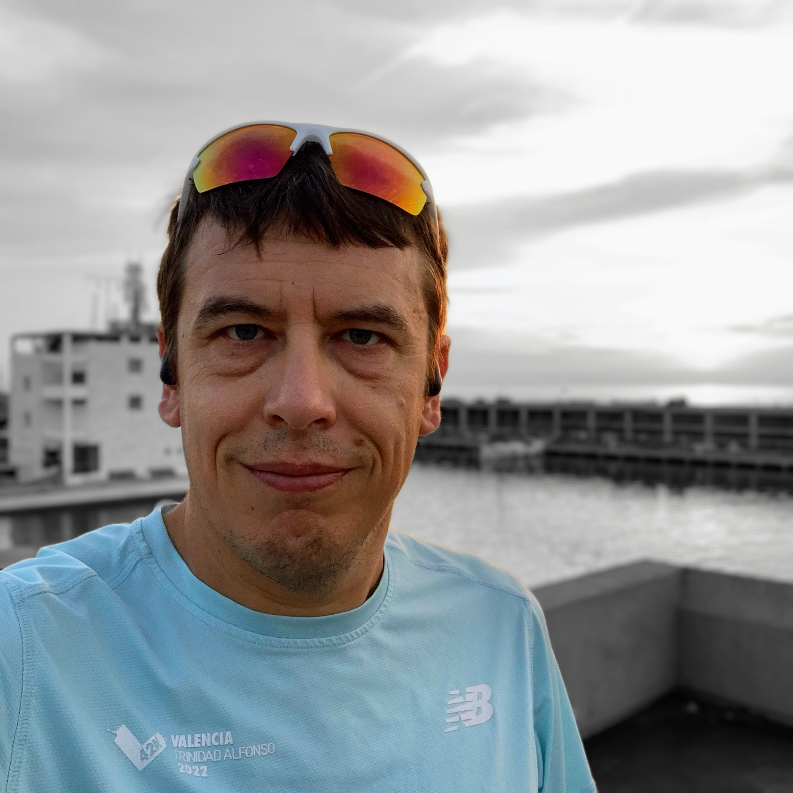
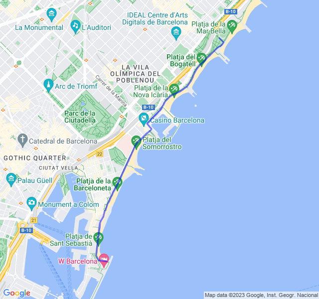
Terza uscita
8km Z2.
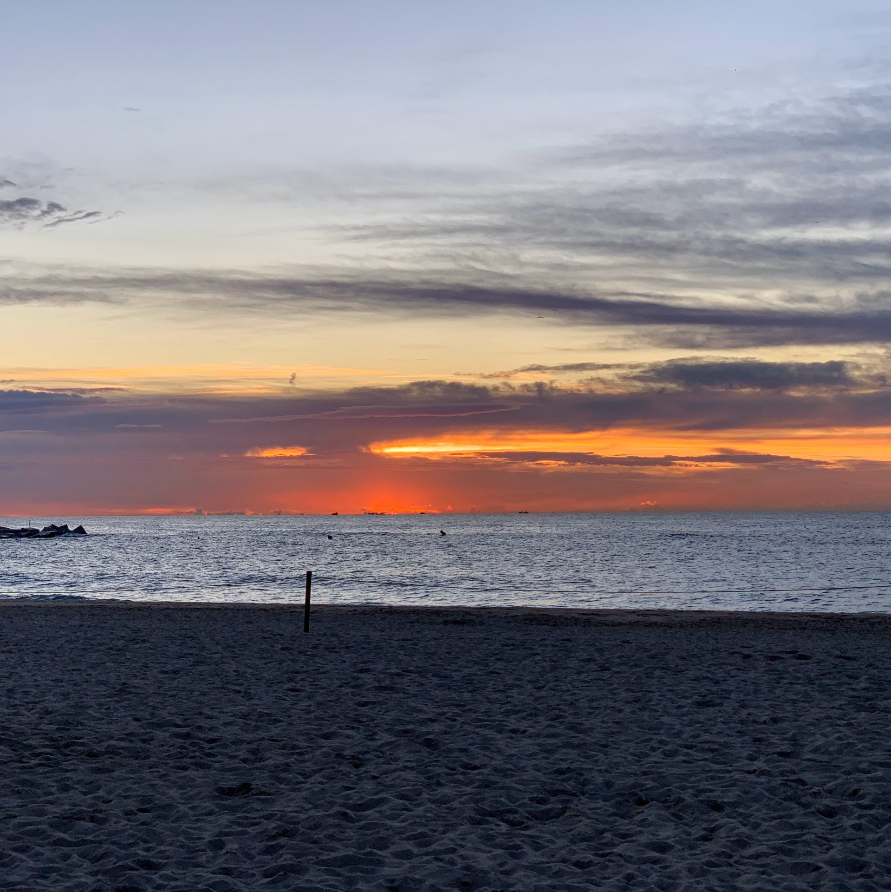
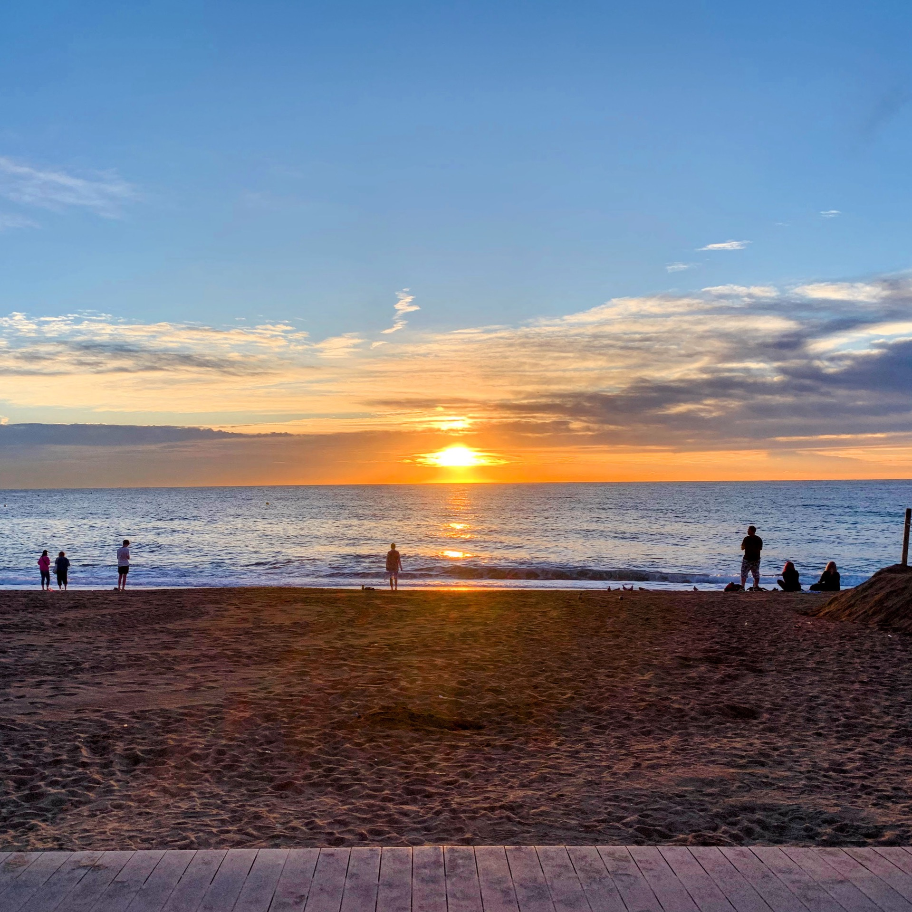
Tutto tranquillo, ritmo buono, sempre in miglioramento e pochissimo tempo in Z3, solo per un paio di cavalcavia.
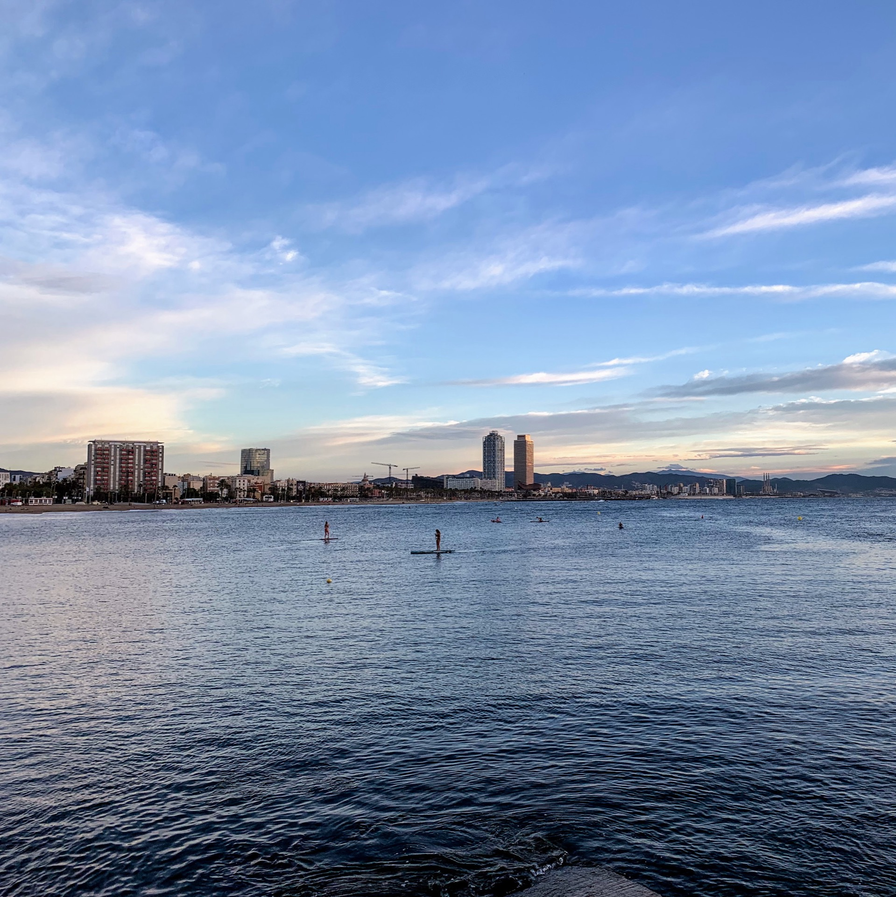
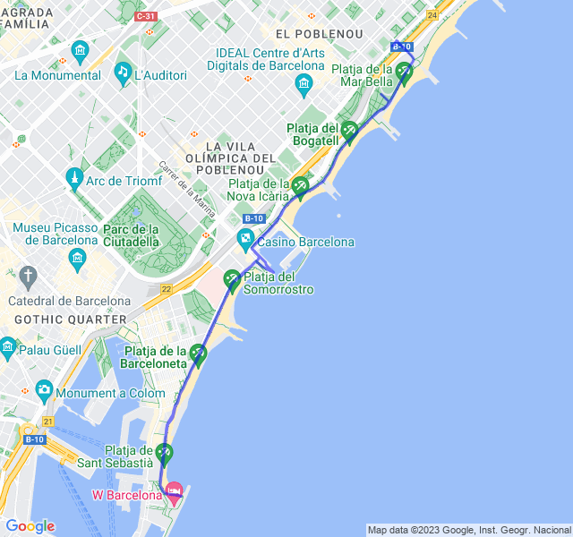
Quarta uscita
16km Z2, ultimo allenamento della settimana.
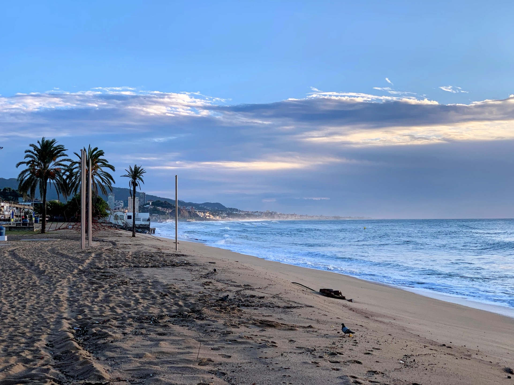
Sono molto soddisfatto, per la prima volta una Z2 sotto i 5 min/km con anche un po' di vento contrario al ritorno che dava un gran fastidio!
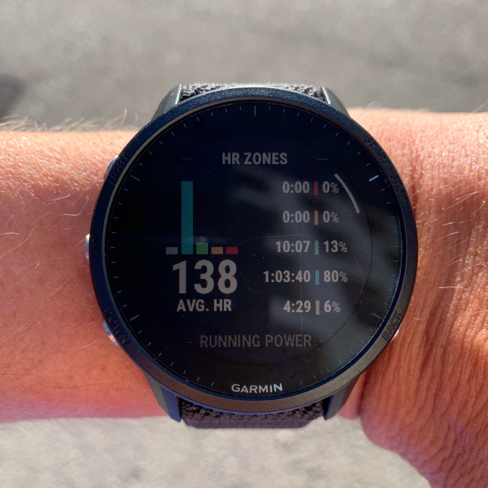
Ancora un paio di settimane e poi la prima mezza da un bel po' di tempo. Son proprio curioso di vedere come andrà.
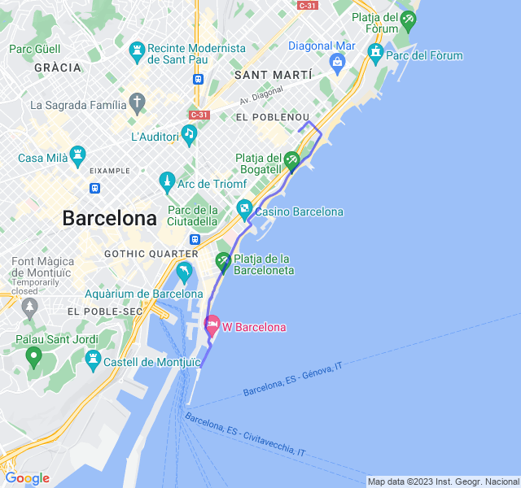